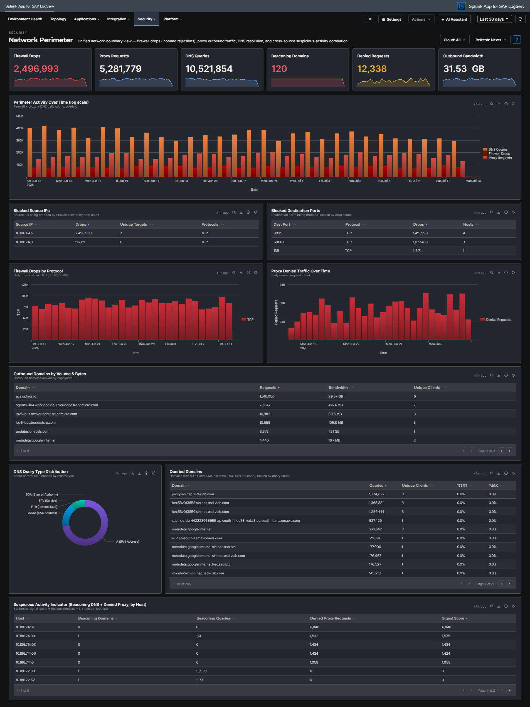

Network Perimeter¶

Why This Dashboard Matters¶
Firewall drops, proxy traffic, and DNS queries are three different lenses on the same underlying question: what is crossing the network boundary and should it be there? Each lens lives on its own operational dashboard (Linux, Proxy Analytics, DNS Analytics), but an attacker rarely limits themselves to a single surface – a compromised host often shows up in multiple signals simultaneously, and that correlation is where the security value lives. Network Perimeter synthesizes the three sources into a single view: inbound rejections (firewall), outbound flow (proxy), and resolution activity (DNS), with a dedicated cross-source panel that ranks hosts by combined suspicious-signal score. Use it as the first stop for “is our network perimeter healthy and clean?”
Panels¶
The title row carries the app-wide Cloud Provider picker (All / aws / azure / gcp). Every panel on this dashboard is scoped by it; leave it on All unless you are deliberately isolating one ingest channel.
- Firewall Drops – Count of kernel firewall
IN_DROPevents fromlinux_secure - Proxy Requests – Count of HTTP requests handled by Squid
- DNS Queries – Count of DNS queries from
isc:bind:query - Beaconing Domains (red) – Domains exhibiting periodic query patterns (low variance in inter-query interval) – candidate C2 channels. Beaconing is detected per calendar day (a domain’s inter-query gaps are analysed within each day), and the KPI is the sum of each day’s distinct beaconing-domain count over the selected range – a domain beaconing every day for a week counts 7. The beaconing panels are refreshed by a daily scheduled search (00:30 search-head local time), so they can lag up to 24 h; the other panels on this dashboard refresh hourly
- Denied Requests (orange when non-zero) – Count of proxy requests with
status=403orvendor_action="TCP_DENIED"; click to drill down - Outbound Bandwidth –
sum(bytes_out)across all proxy requests, formatted KB/MB/GB - Perimeter Activity Over Time – Full-width stacked column chart showing daily counts of all three sources on a single timeline; simultaneous spikes across two or three series are the correlation signal to watch for.
- Blocked Source IPs – Every source IP being dropped by the firewall, ranked by drop count (paginated), with unique target count and protocols seen; row drilldown to the matching events
- Blocked Destination Ports – All destination ports targeted by rejected traffic, grouped by port + protocol and ranked by drop count (paginated)
- Firewall Drops by Protocol – Stacked column showing daily IN_DROP events split by TCP / UDP / ICMP. Protocol shifts are often the clearest signal (ICMP spikes = ping flood / recon; UDP spikes = DNS amplification / port scan; TCP spikes = SYN-style port scan)
- Proxy Denied Traffic Over Time – Column chart of daily denied proxy requests – the outbound complement to firewall drops (inbound)
- Outbound Domains by Volume & Bytes – All destination domains receiving outbound traffic, ranked by bytes (paginated), with request count and unique client count. Row drilldown opens the events for that domain.
- DNS Query Type Distribution – Donut of query-type mix (A / AAAA / PTR / TXT / MX / other). High TXT or MX volume from non-mail hosts is a DNS-tunneling / exfiltration indicator.
- Queried Domains – Table (right of the query-type donut) of all queried domains ranked by query count, with unique-client count and per-domain
%TXT/%MXratios for quick anomaly spotting. Row drilldown opens DNS query events for that domain. - Suspicious Activity Indicator – Full-width cross-source table of internal hosts appearing in both beaconing DNS queries and denied proxy requests, ranked by signal score (
beacon_domains × 3 + denied_requests). Columns: Host, Beaconing Domains, Beaconing Queries, Denied Proxy Requests, Signal Score. Row drilldown opens the Host Details dashboard for that host (its full cross-sourcetype activity), carrying the current time range.
Where the Data Comes From¶
This dashboard synthesises three perimeter sources, all summary-backed:
logserv_perimeter_rollup(populated at minute :16 of every hour bylogserv_perimeter_aggregate) carries seven metrics:fw(firewall actions/sources/ports — theSRC=/DST=/DPT=/PROTO=fields are extracted from the rawlinux_secureevents at aggregation time),proxy+proxydom(Squid request/denied/bandwidth counts and per-domain traffic),dnscount+dnstype+dnsq(DNS query volume, types, and per-query/source counts over thetag=dnsevents), andactivity(the combined activity chart’s classification).- The beaconing panels read the daily collections:
logserv_beaconing_rollup(00:30) for the KPI andlogserv_beaconing_detail_rollup(00:32, metricsqs+denied) for the suspicious activity detail — daily cadence because the gap-variance detection needs a day of inter-arrival history, so these panels update once per day rather than hourly.
Summary-backed panels switch automatically to their exact raw-equivalent search when the selected window is shorter than 90 minutes, so sub-hour investigation stays real-time. The collection keeps 365 days of hourly history (trimmed by a daily retention search); a fresh install seeds the last 30 days from Settings → Dashboard Data → Run backfill. The global Cloud dropdown filters the summaries through the cloud_provider dimension stored in every rollup row. Full schedule and freshness reference: Performance & Data Freshness.
What to Look For¶
- Correlated spikes across sources – The Perimeter Activity Over Time chart is the quickest read on “is something happening right now?” Watch for days when two or three of the series spike together – that’s usually an active event (port scan, active C2, exfiltration window) rather than baseline drift.
- Protocol shifts in firewall drops – The stacked column by protocol is more diagnostic than raw drop counts. A normally TCP-heavy mix suddenly showing large UDP or ICMP bands signals a different attacker technique.
- Blocked Source IPs concentration – A single source IP generating the overwhelming majority of drops is either a persistent attacker or a misconfigured internal host. Either way, the action is the same: investigate that specific IP.
- TXT-heavy queries to a single domain – A domain in Queried Domains with a high
%TXTratio is a DNS-tunneling pattern. Cross-reference the Suspicious Activity Indicator to see which hosts are issuing those queries. - Hosts in the Suspicious Activity table – Any non-empty row here is worth investigating. A host showing up in both beaconing DNS and denied proxy is strong evidence of compromise – the DNS lookups suggest malware C2, and the denied proxy requests suggest the same malware trying to reach blocked destinations.
- Outbound Bandwidth spikes – A sudden rise in the Outbound Bandwidth KPI that isn’t matched by a proportional rise in Proxy Requests means individual transfers are getting larger – often the signature of an exfiltration event.